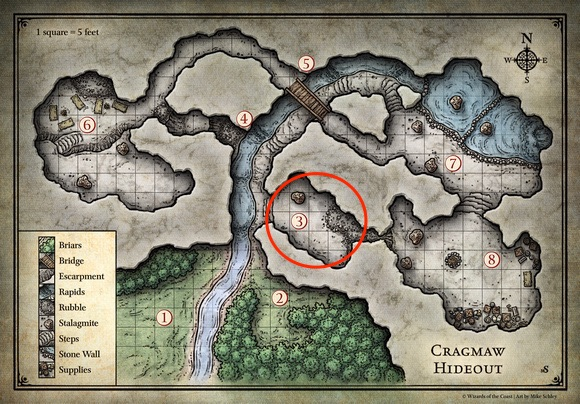

|
d20
|
|
|
|
The adventure begins as the player characters are escorting a wagon full of provisions and supplies from Neverwinter to Phandalin. The journey takes them south along the High Road to the Triboar Trail, which heads east. When they're a half-day's march from Phandalin, they run into trouble with goblin raiders from Cragmaw tribe.
In the city of Neverwinter, a dwarf named Gundred Rockseeker asked you to bring a wagonload of provisions to the rough-and-touble settlement of Phandalin, a couple of days travel southeast of the city. Gundren was clearly excited and more than a little secretive about his reasons for the trip, saying only that he and his brothers had found "something big", and that he'd pay you 10 gold pieces each for escorting his supplies safely to Barthen's Provisions, a trading post in Phandalin. He then set out ahead of you on a horse, along with a warrior escort named Sildar Hallwinter, claiming he needed to arrive early to "take care of business".
You've spent the last few days following the High Road south from Neverwinter, and you've just recently veered east along the Triboar Trail. You've encountered no trouble so far, but this territory can be dangerous. Bandits and outlaws have been known to lurk along the trail.
Take a few minutes to do the following:
Any character can drive the wagon and no particular skill is needed.
Two oxen pull the wagon. If no one is holding the reins, the oxen stop where they are.
The wagon is full of mining supplies and food.
Total value of the cargo is 100 gp.
You've been on the Triboar Trail for about half a day. As you come around a bend you spot two dead horses sprawled about 50 ft ahead of you, blocking the path. Each has several black-feathered arrows sticking out of it. The woods press close to the trail here, with a steep embankment and dense thickets on either side.
Upon closer investigation the horses belong to to Gundred Rockseeker and Sildar Hallwinter. They've been dead about a day, and it's clear that arrows killed the horses.
When characters inspect closer, read the following:
The saddlebags have been looted. Nearby lies an empty leather map case.
4 goblins are hiding in the woods, 2 on each side of the road. They wait utnil someone approaches the bodies and then attack.
Follow these steps for the first battle encounter:
Each goblins is worth 50 XP, please assign XP to the party accordingly. Should be 75 XP.
In the unlikely event the party is defeated, the goblins loot them and the wagon while they are unconscious then head back to Cragmaw Hideout. The characters can continue to Phandalin to buy new gear at Barthen's Provisions, return to the ambush site and find the goblin's trail.
A captured goblin can be convinced to share what it knows. A goblin can also be persuaded to lead the party to the Cragmaw hideout while avoiding traps along the way.
If the characters do not find the Goblin trail or decide to continue to Phandalin, skip to part 2 - Phandalin. Elmar Barthen (the owner of Barthen's Provisions) seeks out the characters and informs them that Gundren Rockseeker never arrived. He recounts the goblin troubles and suggests that the characters return to the ambush site to investigate further (after they rest). Barthen all tells them that Linene Graywind of the Lionshield Coster can provide more info on the goblin attacks.
After the characters defeat the goblins, any inspection of the area reveals that the creatures have been using this place to stage ambushes for some time. A trail hidden behind thickets on the north side of the road leads NW. A character who succeeds on a DC 10 Wisdom (Survival) check recognizes that about a dozen goblins have come and gone along the trail, as well as signs of two human-sized bodies being hauled away from the ambush site.
The party can easily steer the wagon away from the road and tie off the oxen while the group pursues the goblins.
The trail leads five miles NW and ends at the Cragmaw hideout
Ask the players to determine marching order, this is important because the goblins have set two traps.
Snare. About 10 mins after heading down the trail the party encounters a hidden snare.
Upon failure the player is caught by the snare:
Pit. Another 10 mins down the trail the goblins have camouflaged a pit 6 ft wide and 10 ft deep. It triggers when a creature moves across it. The character in the lead spots the hidden pit automatically if his passive (Wisdom) Perception score is 15 or higher. Otherwise, the character must succeed on a DC 15 Wisdom (Perception) check to spot the hidden pit. If the trap isn't detected, the lead character must succeed on a DC 10 Dexterity saving throw or fall in taking 1d6 bludgeoning damage.
The pit's walls are not steep, so no ability check is required to scramble out.
The Cragmaw Tribe is so named because the tribe sharpens its teeth so they appear fierce and jagged. The tribe of goblins have established a hideout from which it can easily harass and plunder traffic moving along the Triboar Trail or the path to Phandalin.
The leader of the Cragmaw bandits lairing here is a bugbear named Klarg, who has orders from the chief of the cragmaws to plunder any poorly defended caravans or travelers that come this way. A few days ago, a messenger from Cragmaw Castle brought new instructions: Waylay the dwarf Gundred Rockseeker and anyone traveling with him.
The Cragmaw cave slopes steeply upward. The entrance is at the foot of a good-sized hill, and the caves and passages are inside the hill itself.
Ceilings. Most of the caves and passages have steeply sloping ceiling that create stalactite-covered vaults rising 20 to 30 feet above the floor.
Light. Areas 1 and 2 are outside. The rest of the complex is dark unless stated otherwise. The boxed text for those locations assumes that the characters have darkvision or a light source.
Rubble. Areas of crumbling rock and gravel are difficult terrain.
Sound. The sound of water in the cave muffles noises to any creatures that aren't listening carefully. Creatures can make a DC 15 Wisdom (Perception) check to attempt to hear activity in nearby chambers.
Stalagmites. These upthrust spires of rock can provide cover.
Stream. The stream that flows through the complex is only 2 feet deep, cold and slow moving, allowing creatures to easily wade through it.
The trail from the goblin ambush site leads to the entrance of the Cragmaw hideout.
Following the goblin's trail, you come across a large cave in a hillside five miles from the scene of the ambush. A shallow stream flows out of the cave mouth, which is screened by dense briar thickets. A narrow dry path leads into the cave on the right-hand side of the stream.
The thicket in area 2 is impenetrable from the west side of the stream.
Goblins in this area are not paying attention. However, if the characters make a lot of noise here - for example, loudly arguing about what to do next, setting up a camp, cutting down brush, and so on - the goblins in area 2 notice and attack them through the thicket, which provides the goblins with half cover.
When the characters cross to the east side of the stream they can see around the screening thickets to area 2. This is a goblin guard post, though the goblins here are bored and inattentive.
On the east side of the stream flowing from the cave mouth, a small area in the briar thickets has been hollowed out to form a lookout post or blind. Wooden planks flatten out the briars and provide room for guards to lie hidden and watch the area - including a pair of goblins lurking there right now!
2 goblins are stationed here. If the goblins notice intruders in area 1, they open fire with their bows, shooting through the thickets and probably catching the characters by surprise. If the goblins don't notice the adventurers in area 1, they spot them when they splash across the stream, and neither side is surprised.
Characters moving carefully or scouting ahead might be able to surprise the goblin lookouts. Have each character who moves ahead make a Dexterity (Stealth) check contested by the goblins passive Wisdom (Perception) score to avoid being surprised.
Thickets. The thickets around the clearing are difficult terrain, but they aren't dangerous - just annoying. They provide half cover to creatures behidni them.
The Cragmaws keep a keep a kennel of foul-tempered wolves that they are training for battle.
Just inside the cave, a few uneven stone steps lead up to a small, dank chamber on the east side of the passage. The cave narrows to a steep fissure at the far end, and is filled with the stench of animals. Savage snarls and the sounds of rattling chains greet your ears where three wolves are chained up just inside the opening. Each wolf's chain leads to an iron rod driven into the base of a stalagmite.
Three wolves are confined here. They can't reach targets standing on the steps, but all three attack any creature (except a goblin) that moves into the room. Goblins in nearby caves ignore the sounds of fighting wolves, since they constantly snap and snarl.
If the wolves are goaded by enemies beyond their reach, they are driven into a frenzy that allows them to yank the iron rod securing their chains out of the floor. A character who tries to calm the animals can attempt a DC 15 Wisdom (Animal Handling) check. On a success, the wolves allow the character to move through out the room. If the wolves are given food
Fissure. A narrow opening in the east wall leads to a natural chimney that climbs 30 feet to area 8.
At the base of the fissure is rubbish that's been discarded through the opening above. A character attempting to ascend or descend the chimney shaft must make a DC 10 Strength (Athletics) check. If the check succeeds, the character moves at half speed up or down the shaft, as desired.
On a check result of 6-9, the character neither gains nor loses ground; on a result of 5 or less, the character falls and takes 1d6 bludgeoning damage per 10 feet fallen. landing prone at the base of the shaft.
From this point on, characters without darkvision will need light to see their surroundings